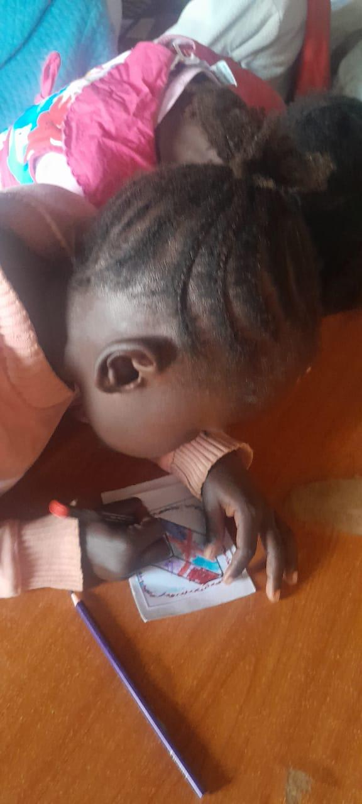
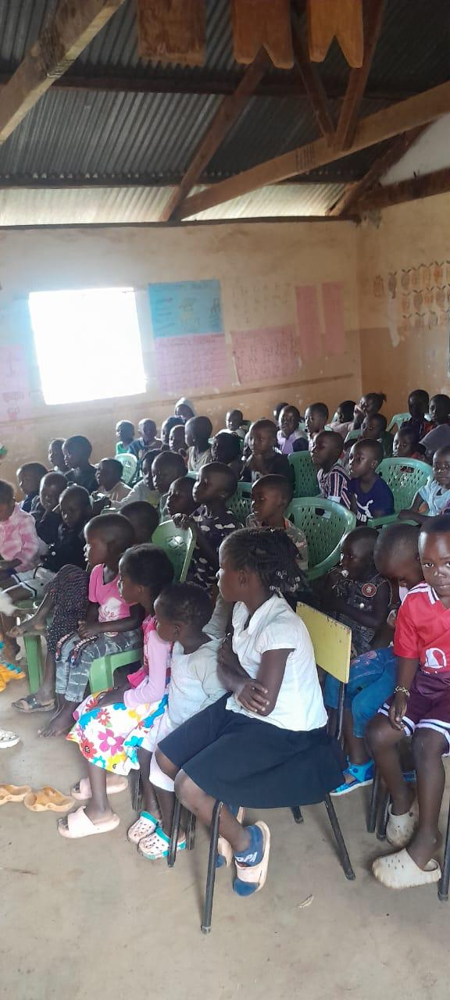
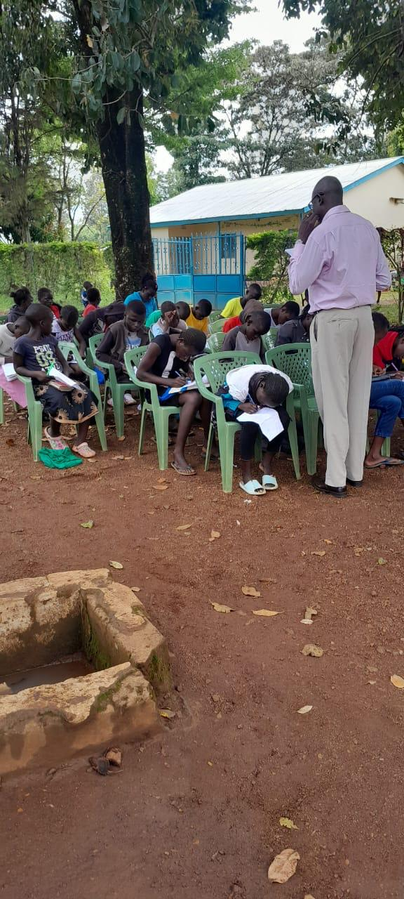
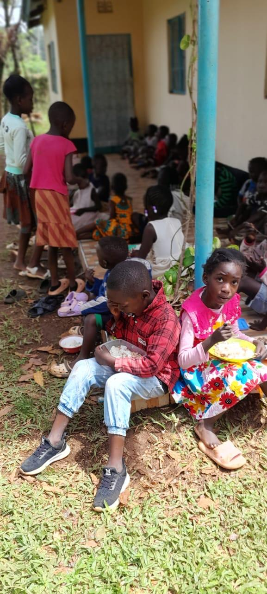
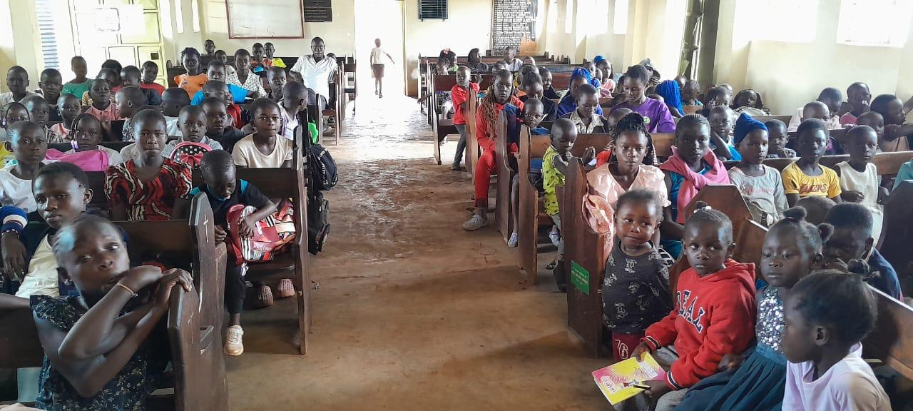
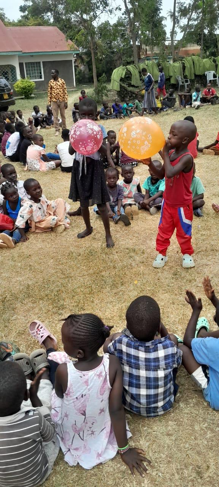
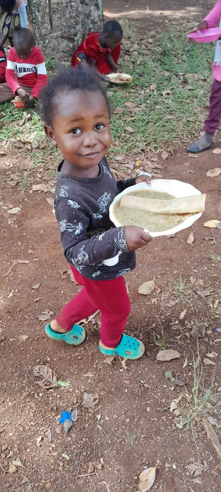
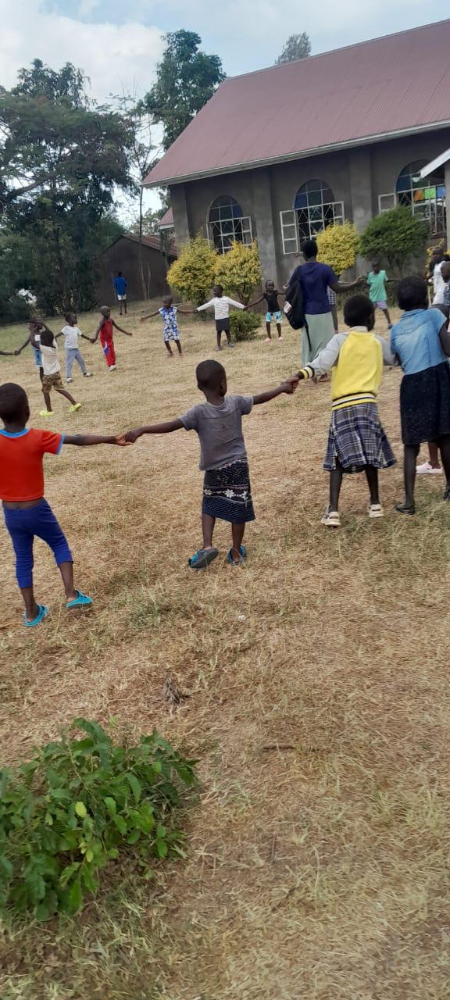

Reaching children with the Good News of Christ, nurturing them spiritually, feeding them with love, and equipping them with life skills according to the Word of God.
“Let the little children come to me.” — Matthew 19:14
Steadfast Ministry is a Christian ministry dedicated to reaching children with the Gospel of Jesus Christ. The ministry was founded in December 2023 by Rev Paul Nehemiah Onyango a serving Anglican church pastor with over 30 years of ministry experience as the director and lani page as the founder,
Through Bible teaching, feeding programs, mentorship, and life skills training, the ministry seeks to transform the lives of children spiritually, emotionally, and socially in line with the Scriptures.
To minister to children through the teaching of God’s Word, providing feeding programs, nurturing Christian values, and empowering them with life skills that help them grow into responsible and Christ-centered individuals.
To raise a generation of children firmly rooted in Christ, spiritually transformed, equipped with life skills, and empowered to positively impact their communities for the glory of God.
Everyday Bible teaching sessions are conducted during the three weeks in December to teach children the Good News of Jesus Christ, prayer, worship, and Christian living.
The ministry provides breakfast and lunch for children throughout the three weeks in December to ensure they are nourished physically while growing spiritually.
Children are equipped with important life skills, mentorship, teamwork, discipline, creativity, and positive values to help them grow confidently.








Your support helps us feed children, teach them the Word of God, and provide life-changing programs.
Phone: 0722446634
email:nehemiahoduor@gmail.com
WhatsApp: 0722446634
Location:Kenya, Bondo